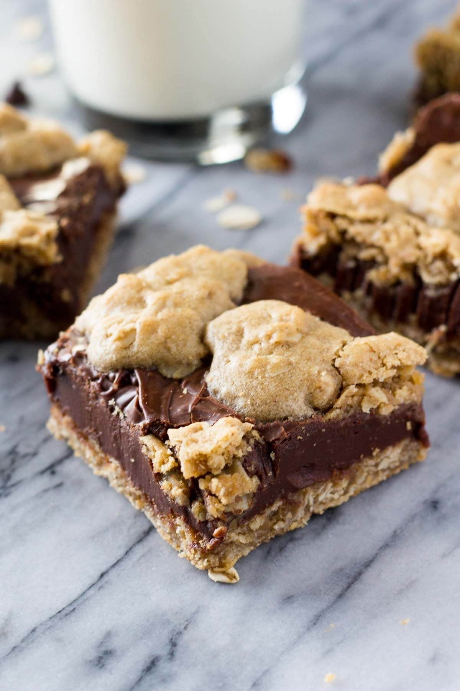

Fudge Oatmeal Bars for Camping

This Fudge oatmeal bar recipe is a family tradition. They were first sold by my grandmother at her cafe in Klamath Falls Oregon.
These fudge oatmeal bars are warm, chocolately, buttery, and save extremely well. They've earned legendary status with my camping
group.
Ingredients
- 1 Cup oats
- 2 Cup AP Flour
- Tablespoon baking soda
- 3 sticks softened butter
- 32 Oz. Chocolate chips
- 1 Can condensed milk
- 1/2 tablespoon coffee
- Pinch salt
- Half cup milk
- 1 Cup granulated sugar
- 2 eggs
Instructions
- Combine Oats, Flour, sugar, and baking soda in large mixing bowl. Thoroughly mix with a whisk or spatula.
-
Once dry ingredients are mixed, add 2 sticks softened butter, both eggs, and half cup mix. Mix with dry ingredients until
no flour clumps remain
-
Mix chocolate in small pot over low heat until chocolate is melted. Once melted, cut heat and add butter, condensed milk,
Coffee grinds, and a pinch of salt to taste.
-
Set aside roughly one third of oat dough. with remaining two thirds, spread over bottom of a large sheet pan,
about 3/4 inch think.
-
Pour Chocolate mixture over oat dough in pan. break remaining third of oat dough into roughly golf-sized balls and
spread evenly over chocolate mixture.
-
Add to oven and bake at 300 for 25 minutes.